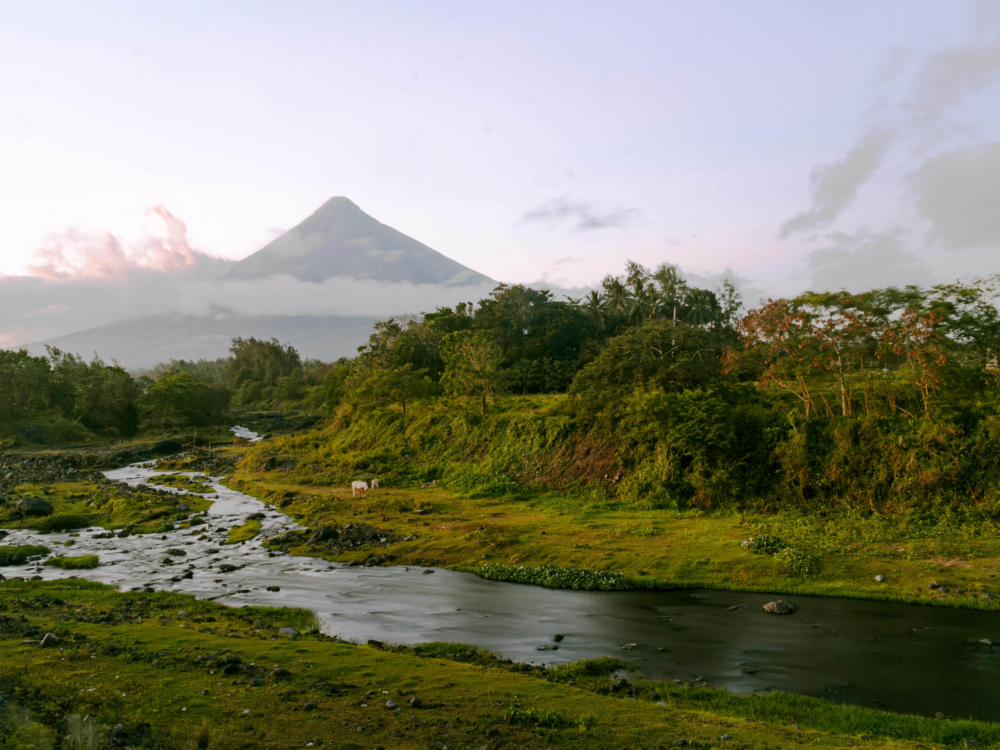
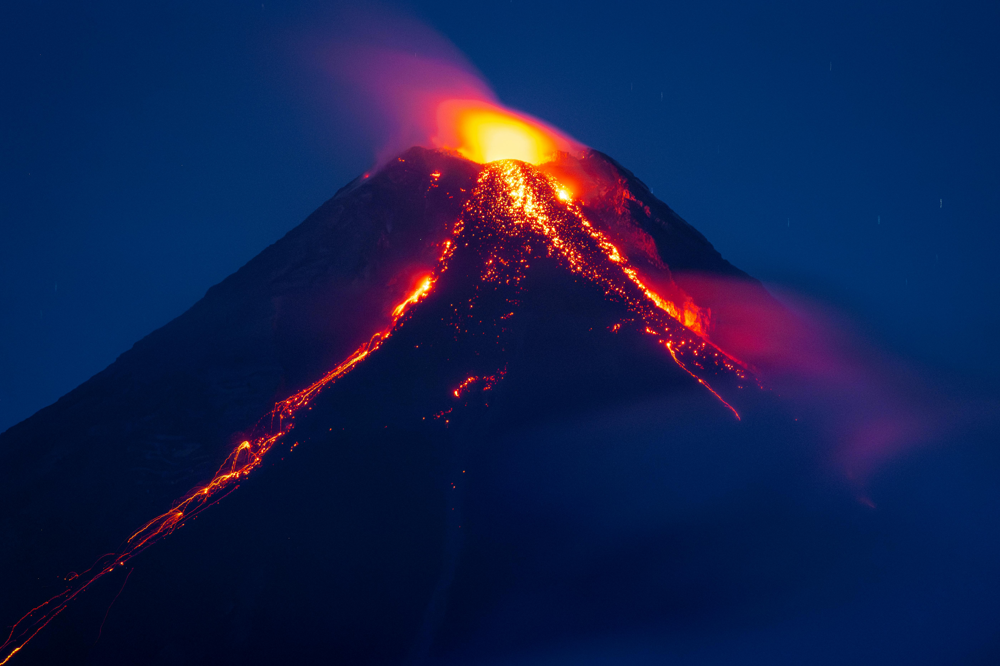

Rising 2,463 meters above the Gulf of Albay, Mayon is world-renowned for its "perfect cone" shape. Whether you are seeking a rugged ATV adventure or a peaceful sunrise view, Mayon offers an unforgettable experience in the heart of Bicol.

Mayon Volcano is famous for its perfect cone shape and breathtaking scenery. It is one of the most iconic landmarks in Albay and offers activities like hiking and ATV rides.

Mayon has erupted many times throughout history. Its 1814 eruption is legendary for creating the Cagsawa Ruins. It remains a powerful symbol of the Bicolano spirit.
Essential details about the volcano's geography and current status.
Maximize your visit with these helpful suggestions from local guides.
Experience the adrenaline and beauty of the Mayon landscape.
Don't miss the Cagsawa Ruins for the most iconic view of the volcano's "perfect cone."